12. 借助版本控制协作#
你多半只是在与自己协作，而两个月前的我从来不回邮件。
——Mark T. Holder
12.1. 概述#
本章将介绍如何用版本控制系统跟踪项目在其生命周期内的更改、在协作团队中共享和编辑代码，以及把完成后的项目分发给目标受众。本章还会介绍两种最常见的版本控制工具：用于本地版本控制的 Git，以及用于远程版本控制的 GitHub。我们重点讲解标准数据科学项目中日常用到的最常见版本控制操作。Git 有很多种用户界面，本章介绍的是 Jupyter Git 界面。
12.2. 本章学习目标#
学完本章后，你将能够：
说明什么是版本控制，以及数据分析项目为什么能从中受益。
在 GitHub 上创建远程版本控制仓库。
使用 Jupyter 的 Git 版本控制工具管理项目版本、开展协作：
克隆远程版本控制仓库，建立本地仓库。
把更改提交到本地版本控制仓库。
把本地更改推送到远程版本控制仓库。
从远程版本控制仓库把更改拉取到本地版本控制仓库。
解决合并冲突。
让协作者能够访问 GitHub 上的远程仓库。
使用 GitHub 议题与协作者沟通。
与他人协作开展项目时遵循最佳实践。
12.3. 什么是版本控制，为什么要用它？#
数据分析项目往往要经过反复迭代和修改，才能从最初的想法变成可以交付给目标受众的成品。如果不刻意、自觉地跟踪分析过程中所做的更改，项目很容易变得一团乱。这种混乱会给分析项目带来严重的负面影响，包括：你的代码无法复现结果，临时文件里记着的零散想法被遗忘或很难找到，文件名让人摸不着头脑、搞不清哪个才是当前的工作版本（如 document_final_draft_final.txt、to_hand_in_final_v2.txt 等），如此种种。
此外，数据分析项目本身具有迭代性，这意味着多数时候，与受众分享的最终版本只是分析开发过程中探索过的一小部分。数据可视化和建模方法上的改动，以及一些负面结果，往往只看最终打磨好的分析是看不出来的。分析开发过程中这些部分不可见，会导致别人重复那些效果不佳的做法，而不是看清哪些做法效果不佳，并以此为跳板去尝试更新、更有成效的方法。
最后，数据分析通常由一个团队而不是一个人完成。这意味着文件需要在多台计算机之间共享，而且常常有多个人同时在编辑同一个项目。这时，要确定谁手上有项目的最新版本——以及如何解决相互冲突的修改——可能真的很有挑战。
版本控制有助于解决这些难题。版本控制就是在文档的整个发展历程中记录更改的过程，记录的内容包括更改发生的时间以及是谁做的更改。它还提供了查看项目早期版本和回退更改的手段。版本控制最常用于软件开发，但任何类型的项目、任何电子文件都能用，包括数据分析。能够记录和查看数据分析项目的历史，对于理解当初是如何以及为何决定采用某一种方法而不是另一种方法等问题很重要。此外，版本控制还提供与他人共享改动、解决冲突的工具，从而促进协作。不过，即使你独自做一个项目，也应该使用版本控制。它能帮你跟踪自己做过什么、什么时候做的，以及接下来打算做什么！
要对项目做版本控制，通常需要两样东西：版本控制系统和仓库托管平台。版本控制系统是负责跟踪更改、与他人共享你的更改、获取他人的更改以及解决冲突的软件。仓库托管平台负责把受版本控制的项目副本保存在网上（即仓库），你和协作者可以远程访问它、讨论议题和缺陷（bug），并分发最终成品。这两样东西都有很多可选方案。本教材用 Git 做版本控制、用 GitHub 做仓库托管，因为二者是目前使用最广的平台。在本章末尾的拓展资源一节，我们列出了当今常用的许多版本控制系统和仓库托管平台。
备注
严格来说，你并不一定要使用仓库托管平台。比如，你可以对只保存在自己电脑某个文件夹里的项目做版本控制——从不把它共享到任何仓库托管平台上。但使用仓库托管平台有几点明显的好处：可以管理协作者的访问权限，有讨论和跟踪缺陷的工具，还能让外部协作者贡献工作成果，更不用说把成果备份在云端带来的那份安心。既然现在大多数仓库托管平台都提供免费账号，很少有哪种情形会让你不想用它。
12.4. 版本控制仓库#
通常，当我们把数据分析项目纳入版本控制时，会创建仓库的两份副本（图 12.1）。其中一份是我们的主要工作区，用来创建、编辑和删除文件，通常称为本地仓库。本地仓库最常见的位置是我们自己的电脑或笔记本电脑，也可以位于服务器上的工作区（如 JupyterHub）。另一份通常存放在仓库托管平台（如 GitHub）上，方便我们与协作者共享，通常称为远程仓库。
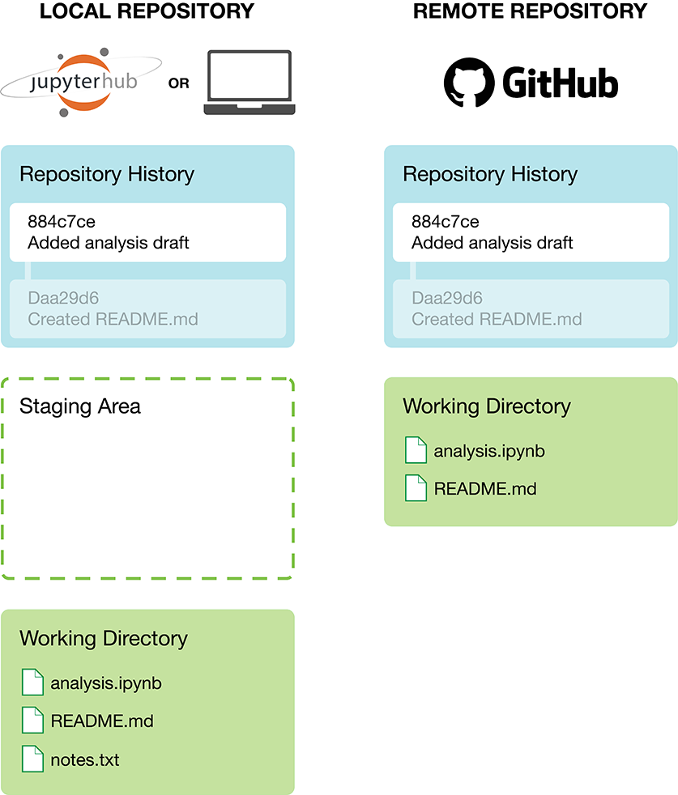
图 12.1 本地与远程版本控制仓库示意图。#
仓库的两份副本都有一个工作目录，你可以在其中创建、保存、编辑和删除文件（如图 12.1 中的 analysis.ipynb）。两份副本还各自维护着完整的项目历史（图 12.1）。这份历史记录了项目文件曾经出现过的所有版本。仓库历史不是自动生成的；必须明确告诉 Git 何时记录项目的一个版本。这些记录称为提交。它们既是文件内容的快照（snapshot），也是创建记录那一刻仓库的元数据（谁做了这次提交、什么时候提交等）。在图 12.1 所示的本地仓库和远程仓库中，“仓库历史（Repository History）”部分有两个用矩形表示的提交。白色矩形表示最近的提交，颜色变淡的矩形表示更早的提交。每次提交都可以通过两项标识来辨认：你自己写下的、人类可读的提交信息，以及 Git 自动为你添加的提交哈希值。
提交信息的用途是简要而丰富地描述自上次提交以来完成了哪些工作。这些信息像一段很有用的叙述，讲出项目在其生命周期中的变化。如果你想查看或回退到项目的某个早期版本，提交信息能帮你判断该查看或回退到哪次提交。在图 12.1 中可以看到两条这样的信息，每次提交各一条：Created README.md 和 Added analysis draft。
哈希值是一串由大约 40 个字母和数字组成的字符。哈希值的用途是充当这次提交的唯一标识，Git 用它来索引项目历史。虽然哈希值相当长——想想看，为了查看项目的旧版本得准确敲出 40 个字符！——但 Git 也能使用更短的哈希值。在图 12.1 中可以看到两个这样的缩写哈希值，每次提交各一个：Daa29d6 和 884c7ce。
12.5. 版本控制工作流#
在本地受版本控制的仓库中工作时，日常流程通常还要多做三步。除了照常处理文件——像平时那样创建、编辑和删除文件——你还必须：
告诉 Git 什么时候把你自己的更改提交到本地仓库。
告诉 Git 什么时候把新的提交发送到远程 GitHub 仓库。
告诉 Git 什么时候从远程 GitHub 仓库取回别人做的新更改。
本节将详细讨论这三步。
12.5.1. 把更改提交到本地仓库#
在本地版本控制仓库中处理文件（例如用 Jupyter）并保存工作时，这些更改最初只存在于本地仓库的工作目录中（图 12.2）。
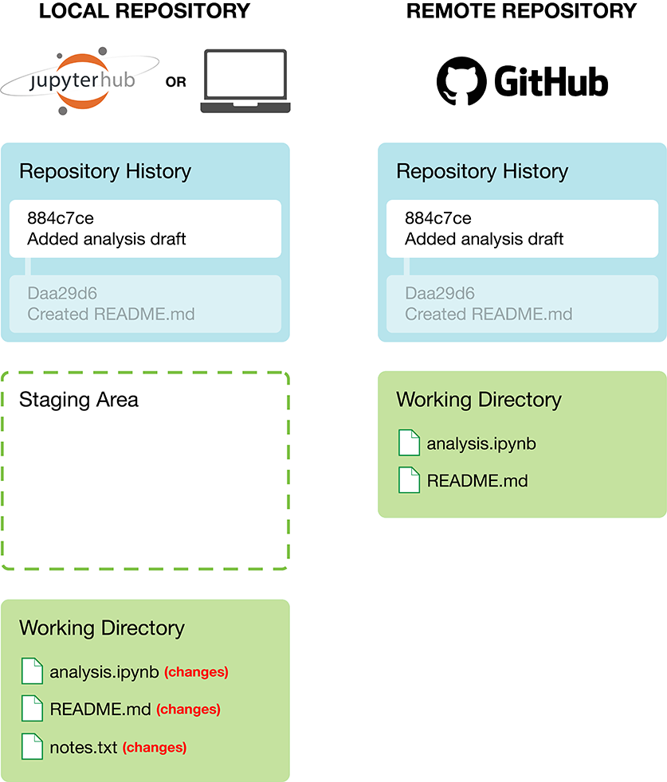
图 12.2 本地仓库中出现文件更改。#
当你觉得该让 Git 记录当前版本的工作时，就需要提交（即生成快照）你的更改。这样做的前提是告诉 Git 哪些文件应该包含在这份快照里。我们把这个步骤称为添加，也就是把这些文件放进暂存区。请注意，暂存区并不是你电脑上真实的物理位置，而是一个概念上的存放处，这些文件在被提交之前先放在这里。Git 版本控制系统使用暂存区的好处在于，你可以只提交某些文件里的更改。例如在图 12.3 中，我们只添加对分析项目重要的两个文件（analysis.ipynb 和 README.md），而不添加自己为项目随手记的草稿（notes.txt）。
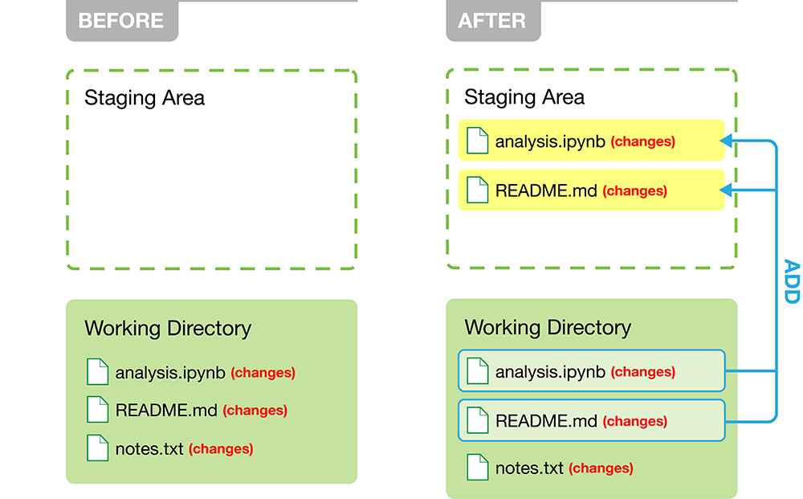
图 12.3 把修改过的文件添加到本地仓库的暂存区。#
把想提交的文件添加到暂存区之后，就可以把它们提交到仓库历史中（图 12.4）。提交时，你必须写一条有用的提交信息，告诉协作者（很多时候也包括未来的你！）做了哪些更改。在图 12.4 中，信息是 Message about changes...；你在自己的工作中务必把它换成一条说明改了什么的信息。这里还要注意，这些更改只提交到了本地仓库的历史中。GitHub 上的远程仓库并没有变化，协作者还看不到你的新更改。
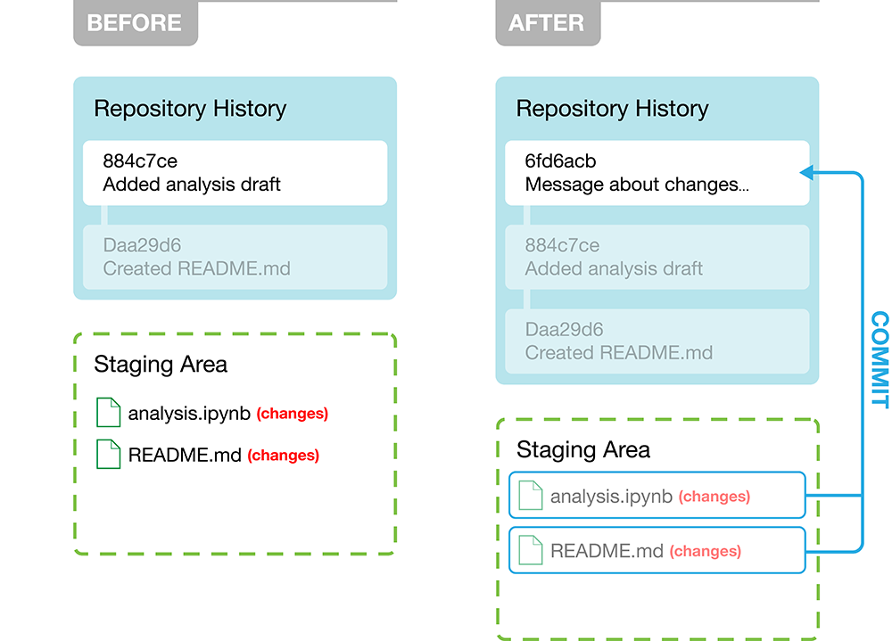
图 12.4 把暂存区中修改过的文件提交到本地仓库历史，并附上说明更改内容的信息。#
12.5.2. 把更改推送到远程仓库#
当你做好一个或多个想与协作者分享的提交后，就需要把这些提交推送（即发送）回 GitHub（图 12.5）。这会把远程仓库（即 GitHub）中的历史更新成与本地仓库一致。这样，协作者与远程仓库打交道时就能看到你的更改。而且你还可以放心：你的工作现在已经备份到云端了！
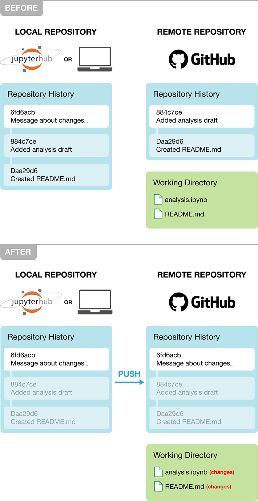
图 12.5 推送提交，把更改发送到 GitHub 上的远程仓库。#
12.5.3. 从远程仓库拉取更改#
如果你和协作者一起做项目，他们也会修改文件（比如 Jupyter 笔记本里的分析代码和项目的 README 文件），把更改提交到自己的本地仓库，再把提交推送到远程 GitHub 仓库与你分享。他们推送更改后，这些更改最初只存在于远程 GitHub 仓库，而不在你的本地仓库中（图 12.6）。
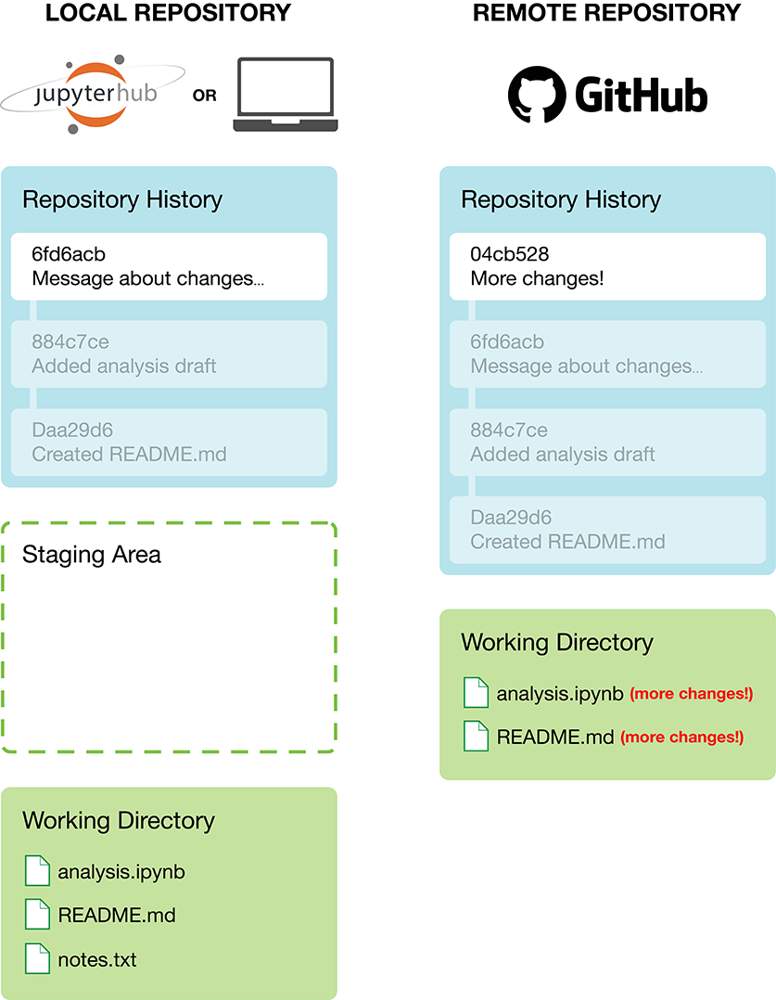
图 12.6 协作者推送的更改，或直接在 GitHub 上创建的更改，都不会自动发送到你的本地仓库。#
要把 GitHub 远程仓库中的新更改取回来，你需要把这些更改拉取到自己的本地仓库。拉取更改就是把本地仓库同步成 GitHub 上的状态（图 12.7）。此外，在从远程仓库拉取更改之前，你自己无法再推送任何更改（不过你仍然可以在自己的本地仓库里工作和提交）。
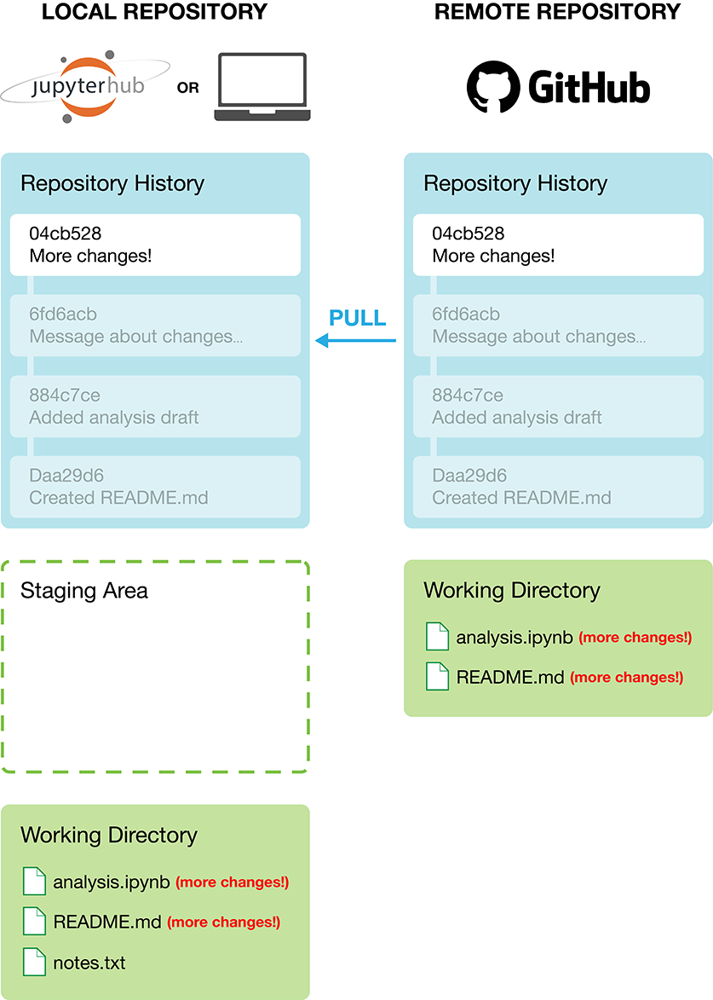
图 12.7 从 GitHub 远程仓库拉取更改，让本地仓库保持同步。#
12.6. 使用 GitHub 操作远程仓库#
了解了 Git 版本控制的一些关键概念和工作流之后，我们来看看具体怎么操作。给新项目启用版本控制有几种不同的方式。为了简单、便于配置，我们建议先创建远程仓库。本节介绍如何在 GitHub 上创建和编辑远程仓库。远程仓库建好之后，我们建议把该仓库克隆（即复制）一份，建立你主要在其中工作的本地仓库。你可以在自己的电脑上克隆，也可以在服务器上的工作区（如 JupyterHub 服务器）中克隆。下文第 12.7 节会详细介绍第二步。
12.6.1. 在 GitHub 上创建远程仓库#
要在 GitHub 上创建远程仓库，你需要一个 GitHub 账号；可以在 github.com 免费注册。登录账号后，点击右上角的“+”图标，再点击“新建仓库（New Repository）”，就能创建托管项目的新仓库，如图 12.8 所示。
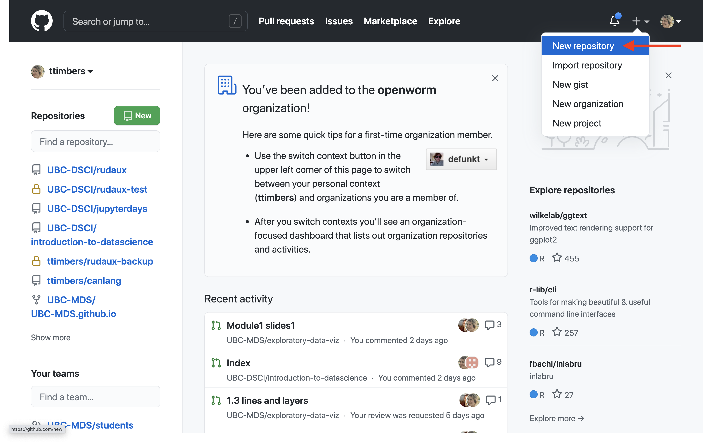
图 12.8 在 GitHub 上，点击 + 菜单中的“新建仓库”即可创建新仓库。#
仓库可以有多种配置，包括名称、可选的描述，以及是否包含若干模板文件。最重要的配置项之一是仓库对外的可见性：公开还是私有。公开仓库任何人都能查看，私有仓库只有你能查看。无论公开还是私有，仓库都只有你能编辑，不过你可以给其他协作者授予访问权限来改变这一点。
要创建一个带模板 README.md 文件的公开仓库，请按图 12.9 所示的步骤操作：
输入项目仓库的名称。下面的示例中用的是
canadian_languages。大多数仓库都遵循类似的命名惯例：只包含小写字母单词，单词之间用下划线或连字符分隔。选择仓库的隐私设置。
勾选“添加 README 文件（Add a README file）”。这会在仓库的根文件夹中创建
README.md模板文件。仓库名称和配置都满意之后，点击绿色的“创建仓库（Create Repository）”按钮。
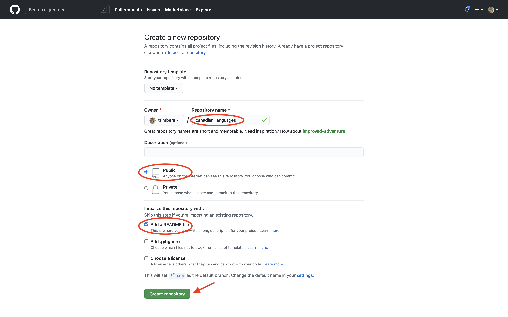
新建的公开仓库如果带有 README.md 模板文件，看起来应该与图 12.10 所示类似。
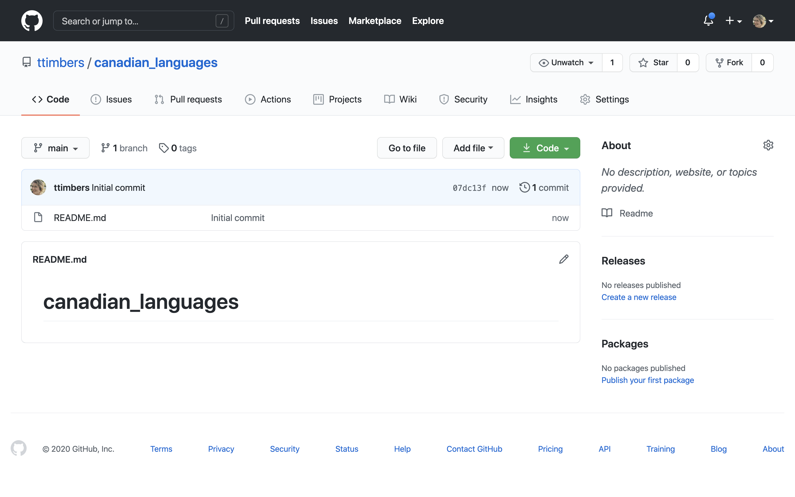
12.6.2. 用铅笔工具（pen tool）在 GitHub 上编辑文件#
铅笔工具可以用来编辑已有的纯文本文件。点击铅笔工具，文件会打开在一个文本框中，你可以用键盘修改其中的内容（图 12.11 和图 12.12）。
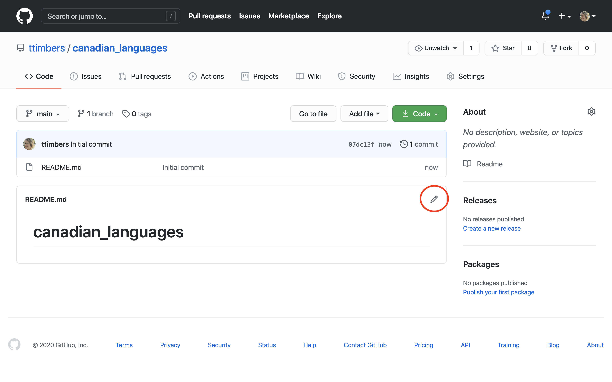
图 12.11 点击铅笔工具会打开一个文本框，用来编辑纯文本文件。#
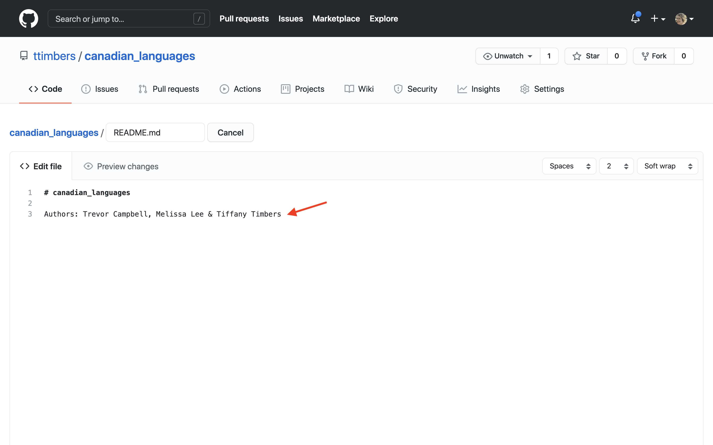
图 12.12 点击铅笔工具后可以修改内容的文本框。#
修改完成后，可以通过提交更改把它们“保存”下来。在仓库中提交文件时，版本控制系统会为这个文件当时的样子拍一张快照。随着项目不断推进，你可能会对同一个文件做出许多次提交，这就为该文件生成了一份有用的版本历史。在 GitHub 上，点击绿色的“提交更改（Commit changes）”按钮，就会保存文件并完成一次提交（图 12.13）。
回想第 12.5.1 节讲过的内容：通常必须先把文件加入暂存区，然后才能提交。那么直接在 GitHub 上操作时，为什么不必这么做呢？因为在幕后，你点击绿色的“提交更改”按钮时，GitHub 确实在提交之前把这个文件加入了暂存区。不过请注意，在 GitHub 上一次只能提交一个文件的更改。而在自己的本地仓库中工作时，你可以同时提交多个文件的更改。如果项目的一次“改进”要改动多个文件，这一点尤其有用。在本地仓库中工作时，你还能运行代码，这在 GitHub 上是做不到的。一般来说，在 GitHub 上编辑只适合对纯文本文件做小幅修改。
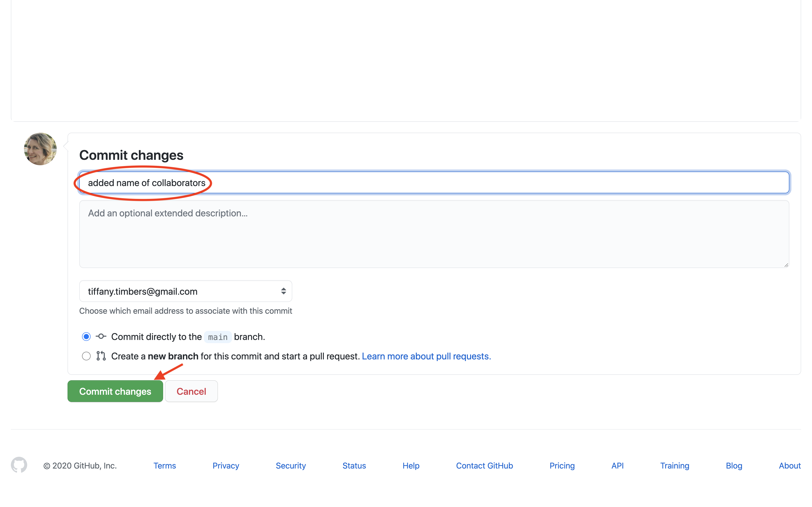
图 12.13 用铅笔工具保存更改时，必须提交这些更改并附上相应的提交信息。#
12.6.3. 用“添加文件（Add file）”菜单在 GitHub 上创建文件#
“添加文件”菜单可以用来创建新的纯文本文件，也可以从你的电脑上传文件。要新建纯文本文件，请点击“添加文件”下拉菜单，选择“新建文件（Create new file）”选项（图 12.14）。
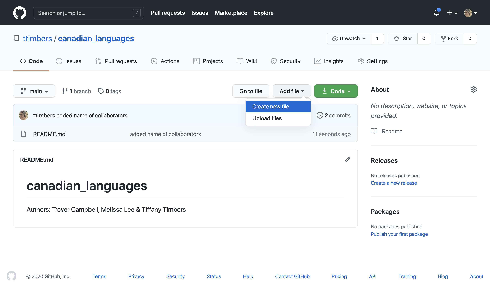
图 12.14 新的纯文本文件可以直接在 GitHub 上创建。#
页面打开后，会有一个填写文件名的小文本框，还有一个填写文件内容的大文本框。注意“编辑新文件（Edit new file）”和“预览（Preview）”这两个标签页。在两者之间切换，就能分别输入、编辑文本，以及查看文本渲染后的样子（图 12.15）。GitHub 能够识别并渲染 .md 文件，它使用的 markdown 语法与 Jupyter 笔记本非常相似，所以“预览”标签页对检查 markdown 代码是否正确特别有帮助。
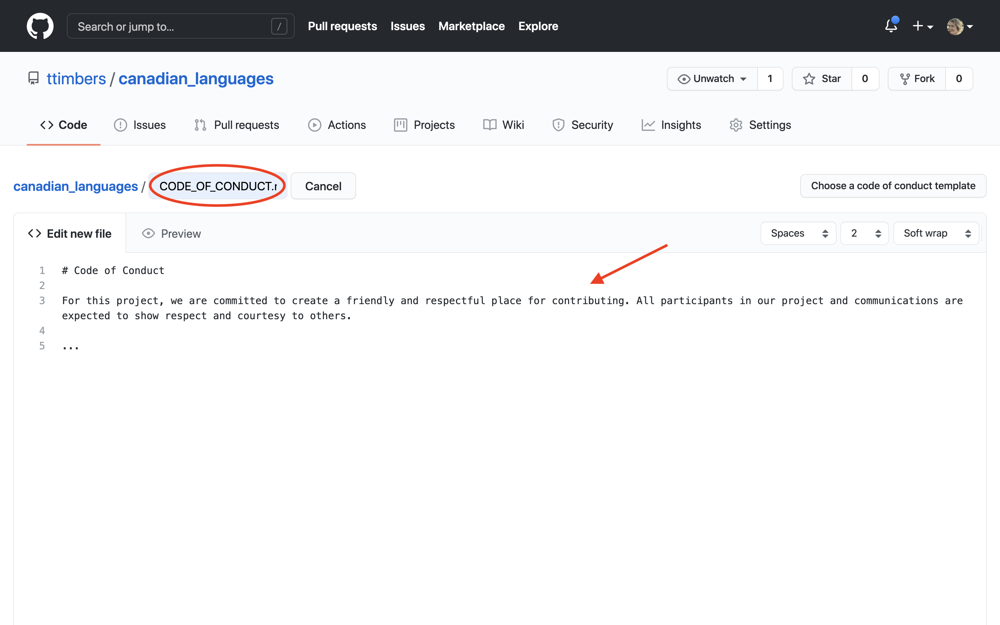
图 12.15 新建纯文本文件时，需要在红圈标出的文本框中填写文件名，并在较大的文本框中填写文件内容（红色箭头）。#
点击页面底部绿色的“提交更改”按钮，即可保存并提交你的更改（图 12.16）。
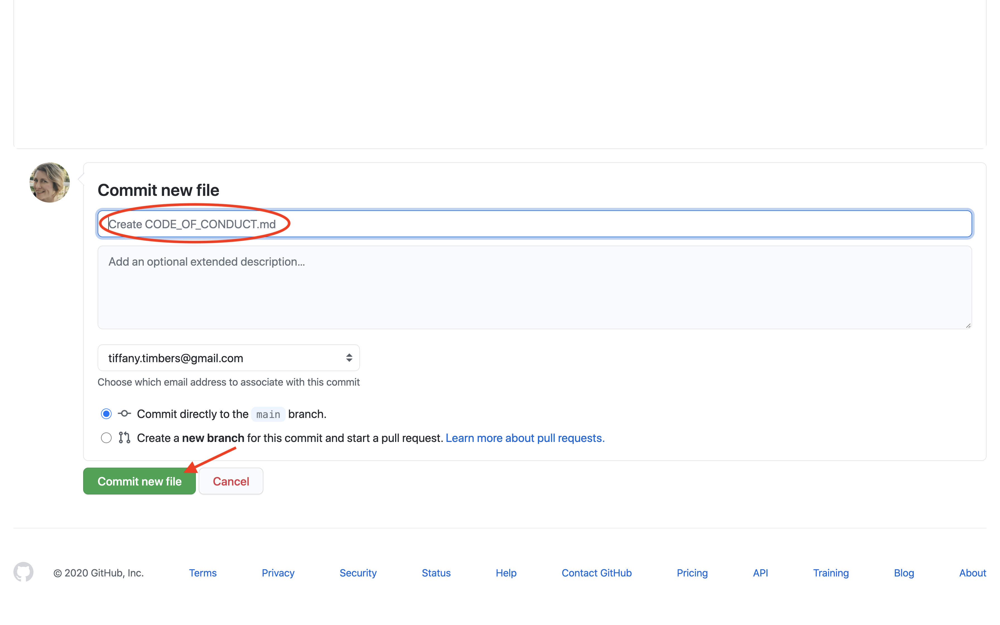
图 12.16 新建的文件必须连同相应的提交信息一起提交，才能保存下来。#
你也可以用“添加文件”下拉菜单，选择“上传文件（Upload files）”，把在本地电脑上创建的文件上传上去（图 12.17）。要从本地电脑选择要上传的文件，你可以把它们拖放到图 12.18 所示的灰色方框区域，也可以点击“选择文件（choose your files）”链接，打开文件浏览对话框。选好要上传的文件后，点击页面底部绿色的“提交更改”按钮（图 12.18）。
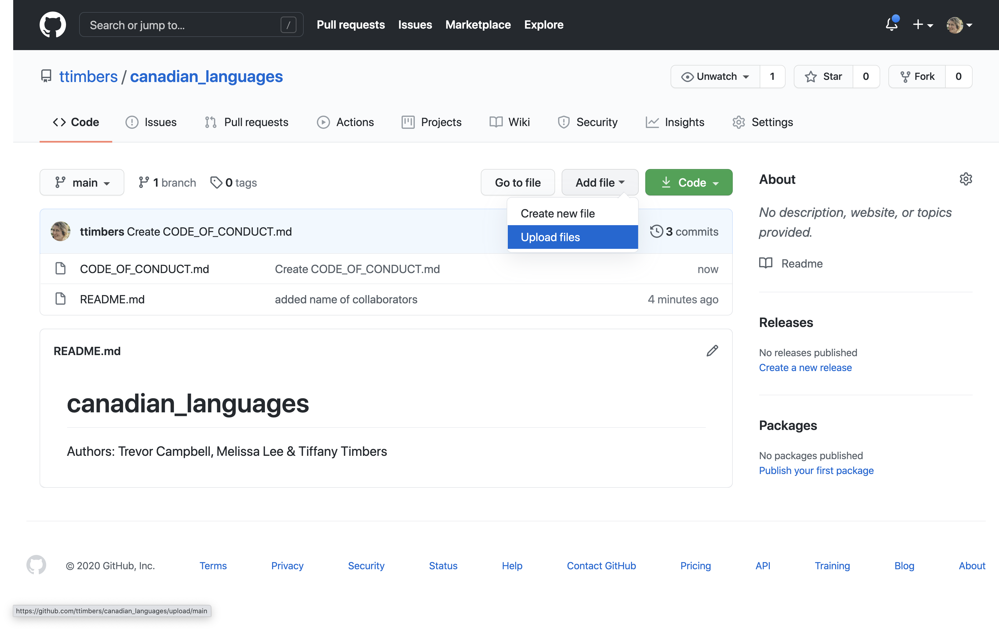
图 12.17 任何类型的新文件都可以上传到 GitHub。#
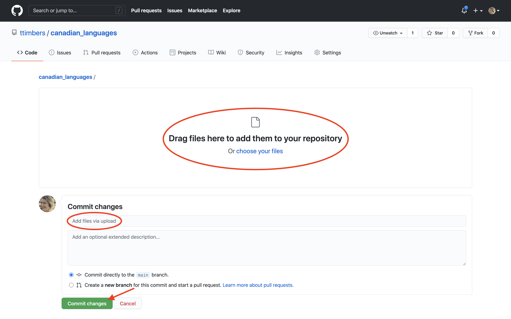
图 12.18 将要上传的文件拖入 GitHub 网站（红圈处），或者点击“选择文件”，即可指定要上传的文件。上传的文件同样必须连同相应的提交信息一起提交。#
请注意，Git 和 GitHub 的设计目标是跟踪单个文件的变化。不要把整个项目打包成一个归档文件（例如 .zip）上传。如果这样做，Git 就只能跟踪整个 .zip 文件的变化，而这样的变化是人无法阅读的。提交一个大归档文件，会让版本控制完全失去意义：你将无法查看、解读或找到项目任何实际内容在历史中的变化！
12.7. 使用 Jupyter 处理本地仓库#
虽然在 GitHub 上有好几种创建和编辑文件的方式，但它们的能力都不足以高效地创建和编辑复杂文件，也不足以处理那些需要运行之后才能判断是否可用的文件（例如包含代码的文件）。比如，你没法直接在 GitHub 上运行用 Python 代码写的分析。因此，把在 GitHub 上创建的远程仓库连接到本地的编程环境会很有用。做法就是创建这份仓库的本地副本，并在其中工作。本章我们重点讲如何借助 Jupyter Git 扩展在 Jupyter 中使用 Git。这个扩展既可以由你本地电脑上的 Jupyter 运行，也可以在 JupyterHub 服务器上运行。建议你先阅读第 11 章，学会使用 Jupyter 之后再读本章。
12.7.1. 生成 GitHub 个人访问令牌（personal access token）#
要在本地仓库与 GitHub 上的远程仓库之间发送和取回工作内容，你需要经常向 GitHub 进行身份验证，以证明自己拥有所需权限。做法有好几种，但对初学者，我们推荐使用 HTTPS 方式，因为它更简单，需要做的配置也更少。要使用 HTTPS 方式，GitHub 要求你提供一个个人访问令牌。个人访问令牌就像密码一样——所以要保密！——不过它能让你更精细地控制令牌可以访问账户的哪些部分，还能为身份验证设置到期日期。要生成个人访问令牌，首先必须访问 settings/tokens，它会带你进入账户设置中的“个人访问令牌（Personal access tokens）”页面。进入该页面后，点击“生成新令牌（Generate new token）”（图 12.19）。注意，接下来可能会要求你用用户名和密码重新进行身份验证，才能继续。
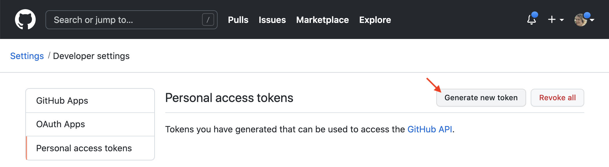
图 12.19 用于发起创建新个人访问令牌的“生成新令牌”按钮。它位于账户设置的“开发者设置（Developer settings）”页面中的“个人访问令牌”部分。#
系统会要求你添加一段说明，描述这个个人访问令牌的用途。接下来，你需要为令牌选择权限；在这里你可以控制令牌能访问账户的哪些部分。请务必只勾选你确实需要的权限。在图 12.20 中，我们只勾选了“repo”方框，这样令牌就能访问我们的仓库（以便推送和拉取），而无法访问 GitHub 账户的其他任何功能。最后，把页面滚动到底部，点击绿色的“生成令牌（Generate token）”按钮，即可生成令牌（图 12.20）。
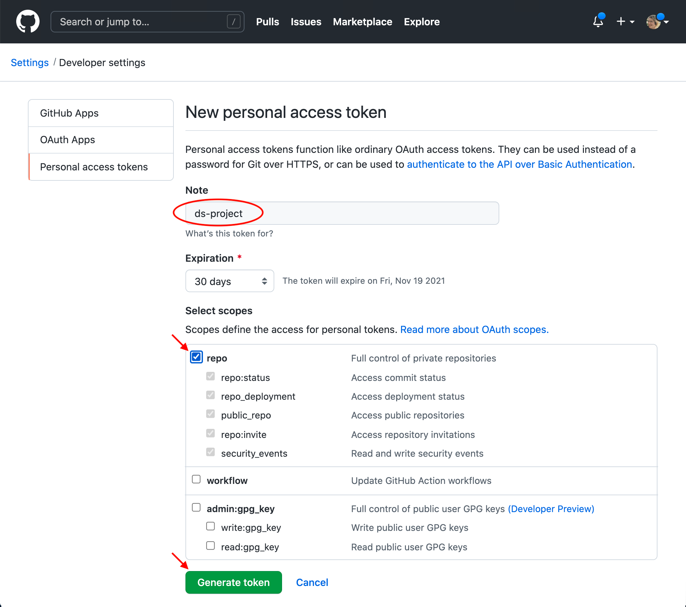
图 12.20 创建新个人访问令牌的网页。#
最后，你会进入一个页面，可以在这里查看并复制刚刚生成的个人访问令牌（图 12.21）。由于令牌能访问你账户的某些部分，你应该把它当作密码来对待；例如，可以考虑用密码管理器把它（以及你的其他密码和令牌！）安全地保存起来。请注意，这个页面只会向你显示一次令牌，所以务必马上把它存到安全的地方。万一你不小心忘了保存，也不用着急——点击令牌旁边的“删除（Delete）”按钮就能删掉它，然后重新生成一个。想进一步了解 GitHub 身份验证，请参阅本章末尾的拓展资源部分。
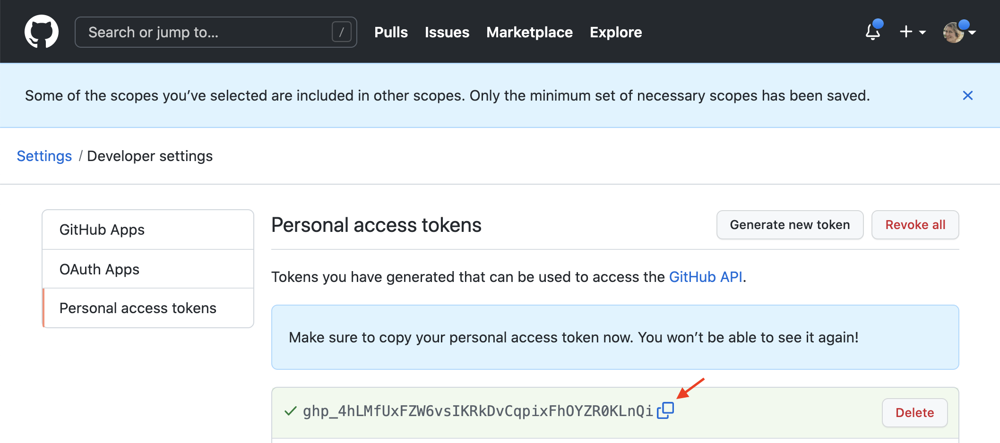
图 12.21 刚刚生成的个人访问令牌的显示界面。#
12.7.2. 使用 Jupyter 克隆仓库#
从 GitHub 克隆远程仓库、建立本地副本之后，这份副本知道自己是从哪里来的，因此也知道该把新提交的修改发送到哪里、从哪里接收。为此，先在 GitHub 上打开“代码（Code）”下拉菜单，从 HTTPS 标签页复制 URL（图 12.22）。
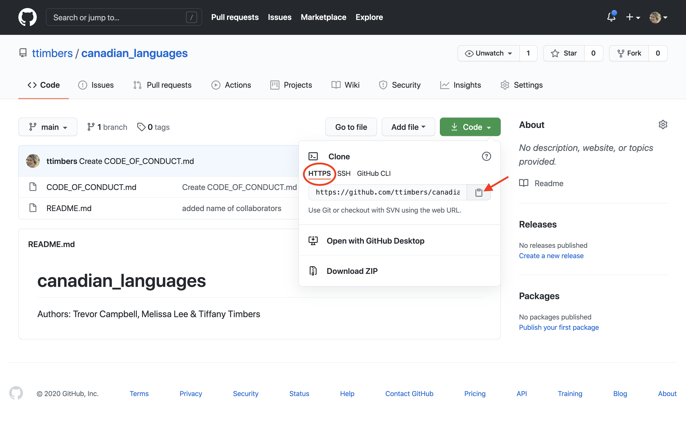
图 12.22 绿色的“代码”下拉菜单中包含与 GitHub 远程仓库位置对应的远程地址（URL）。#
打开 Jupyter，点击文件浏览器标签页上的 Git+ 图标（图 12.23）。
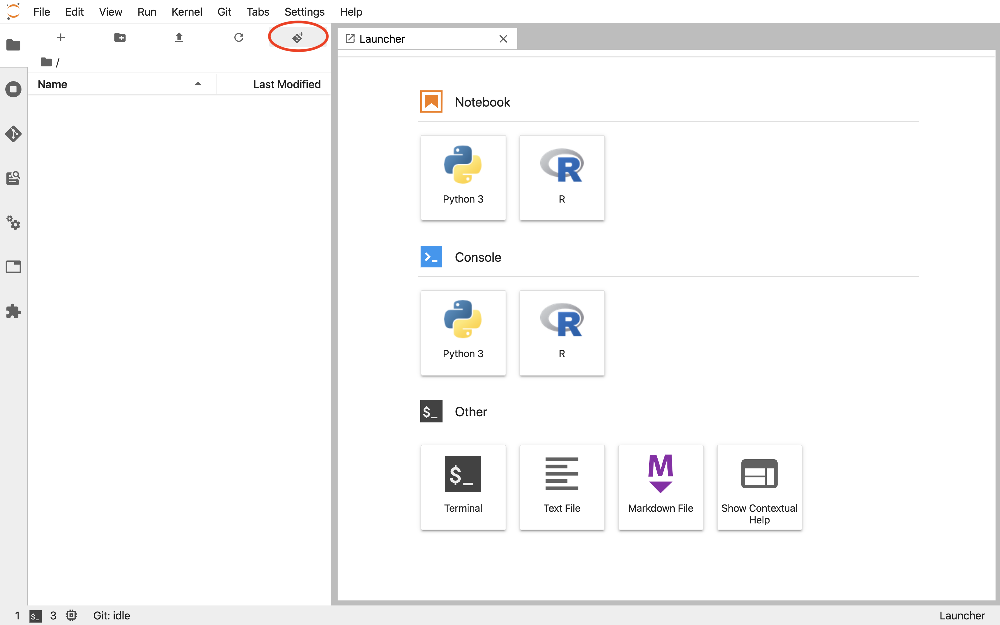
图 12.23 Jupyter Git 克隆图标（红圈处）。#
粘贴你创建的 GitHub 项目仓库的 URL，然后点击蓝色的“克隆（CLONE）”按钮（图 12.24）。
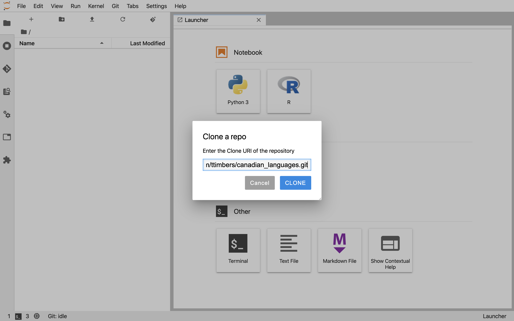
图 12.24 Jupyter 中要求输入 GitHub 仓库远程地址（URL）的提示框。#
现在，文件浏览器标签页上会出现该仓库的文件夹。文件夹里放着 GitHub 上原有的所有文件（图 12.25）。
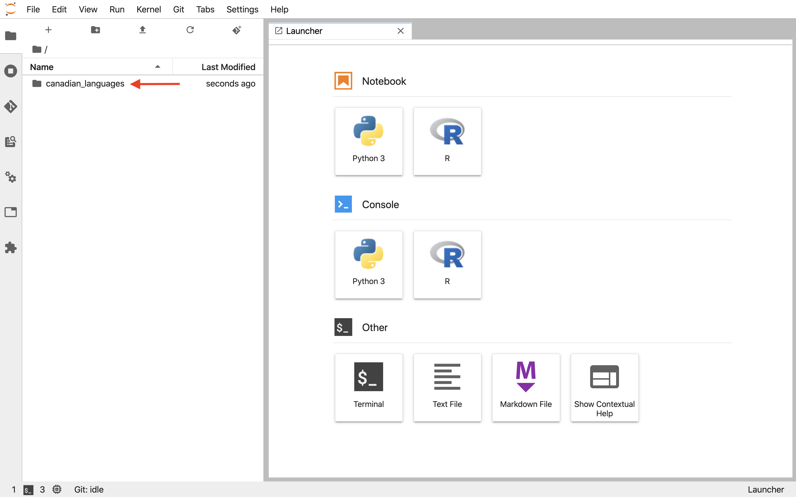
图 12.25 克隆得到的 GitHub 仓库可以在 Jupyter 文件浏览器中查看和访问。#
12.7.3. 指定要提交的文件#
现在你已经把 GitHub 上的远程仓库克隆成了本地仓库，接下来就可以编辑、创建和删除文件了。例如，假设你新建并保存了一个文件（名为 eda.ipynb），想把它送回 GitHub 上的项目仓库（图 12.26）。要把这个改动过的文件“添加”到暂存区（也就是标记出这个文件的更改是我们想要提交的），请点击 Jupyter 最左侧的 Jupyter Git 扩展图标（图 12.26）。
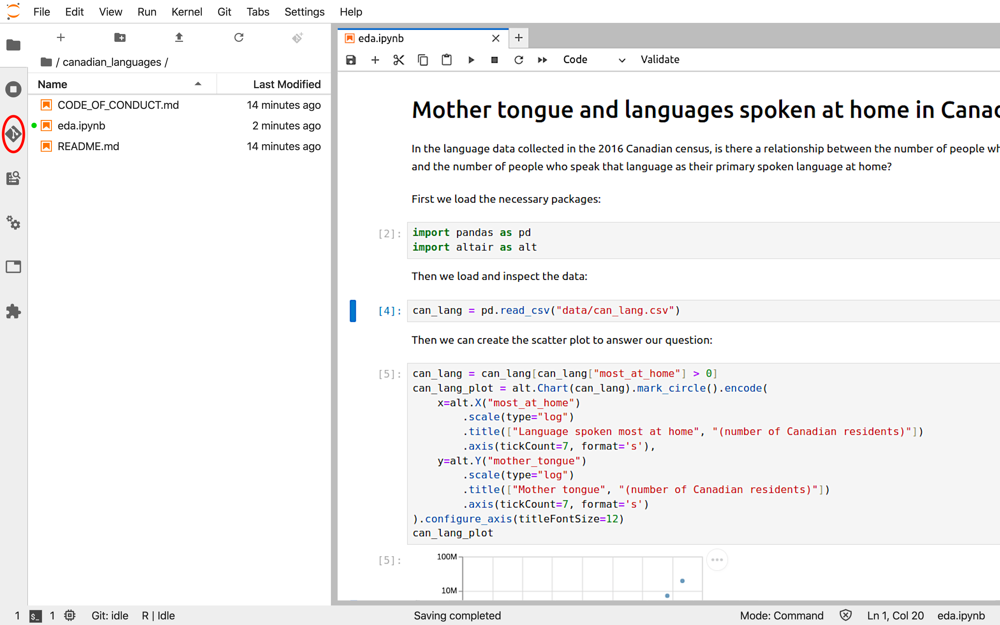
图 12.26 Jupyter Git 扩展图标（红圈标出）。#
这会打开 Jupyter Git 图形用户界面面板。接下来，点击想要“添加”的文件旁边的加号（+）（图 12.27）。注意，由于这是该文件的第一次改动，它出现在“未跟踪（Untracked）”分组下。不过下次你再编辑这个文件并想添加更改时，会在“已修改（Changed）”分组下找到它。
你还会在“未跟踪”分组下看到一个 eda-checkpoint.ipynb 文件。这是你在编辑 eda.ipynb 时由 Jupyter 创建的临时“检查点文件（checkpoint file）”。一般来说，不要把自动生成的文件添加到 Git 仓库中；只添加你自己直接创建和编辑的文件。
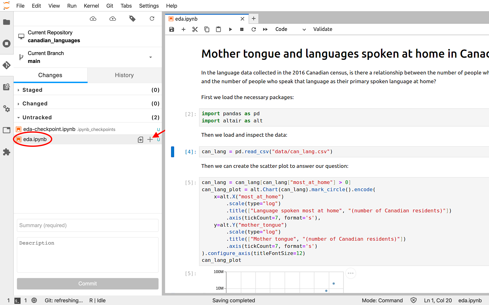
图 12.27 用加号（+）把 eda.ipynb 加入暂存区。#
点击加号（+）会把文件从“未跟踪”分组移到“已暂存（Staged）”分组，这样 Git 就知道你想把文件当前的状态拍成快照，作为一次提交（图 12.28）。现在你可以“提交”这些更改了。记得写一句（清楚、有用的！）说明，讲清改动了什么，好让你的协作者（以及未来的你）了解这次提交做了什么。
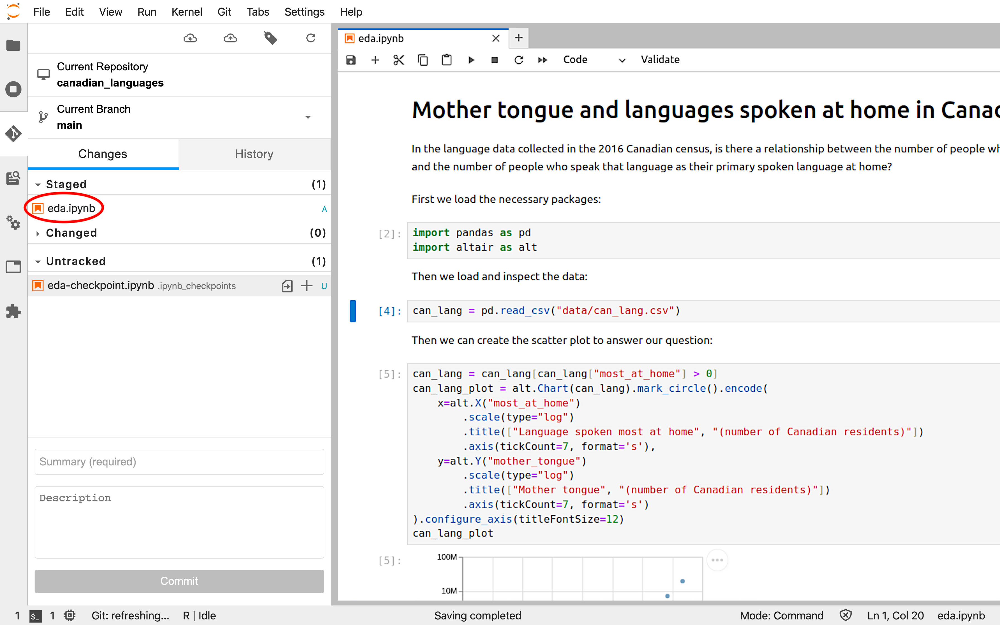
图 12.28 把 eda.ipynb 添加进去之后，它就会出现在暂存区中。#
12.7.4. 完成提交#
要把更改连同相应的提交信息保存为快照，你必须在 Git 面板底部的文本框中填写一条信息，然后点击蓝色的“提交（Commit）”按钮（图 12.29）。强烈建议写下有用、有意义的信息，说明改动了什么。今后如果需要查看或取回文件的某个历史版本，或者把项目回退到更早的状态，这些提交信息以及每次提交的日期时间戳就是浏览项目历史的主要依据。第一次点击“提交”按钮时，系统会提示你输入姓名和电子邮件。每台使用 Git 的机器只需设置一次。
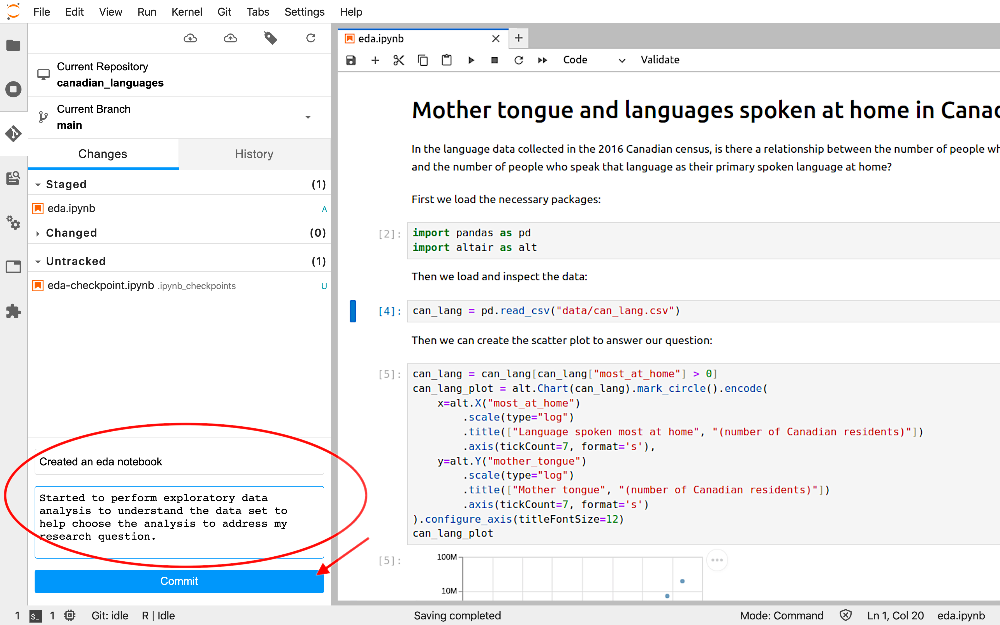
图 12.29 必须先在 Jupyter Git 扩展的提交文本框中填写提交信息，才能用蓝色的提交按钮记录这次提交。#
“提交”文件之后，你会看到“已暂存”文件的数目是 0。现在你可以把更改推送到 GitHub 上的远程仓库了（图 12.30）。
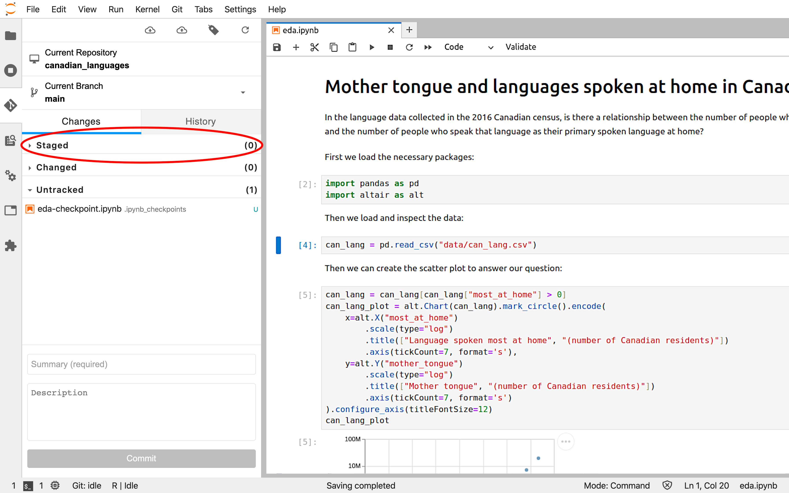
图 12.30 记录一次提交之后，暂存区应该是空的。#
12.7.5. 把提交推送到 GitHub#
要把已提交的更改送回 GitHub 上的远程仓库，你需要推送它们。做法是点击 Jupyter Git 标签页上带向上箭头的云朵图标（图 12.31）。
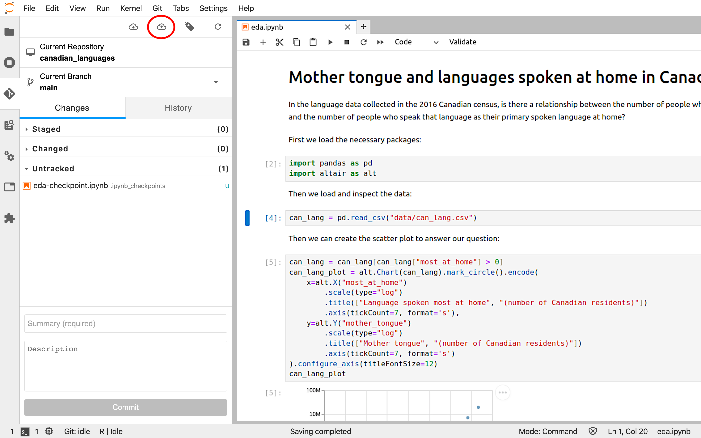
图 12.31 Jupyter Git 扩展的“推送”按钮（红圈处）。#
然后系统会提示你输入 GitHub 用户名，以及你之前生成的个人访问令牌（不是你的账户密码！）。点击蓝色的“确定（OK）”按钮，开始推送（图 12.32）。
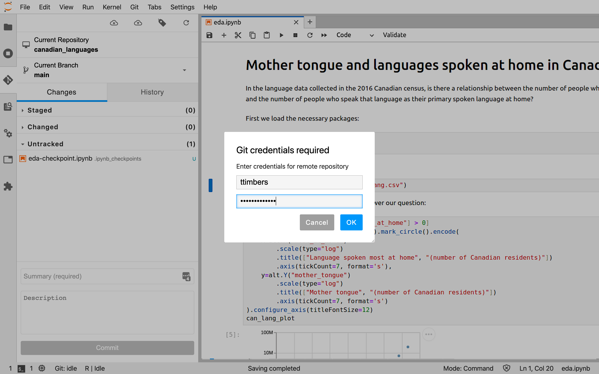
图 12.32 输入你的 Git 凭据，以授权向远程仓库推送。#
如果文件成功推送到了 GitHub 上的项目仓库，你会看到一条成功提示（图 12.33）。点击“忽略（Dismiss）”即可继续在 Jupyter 中工作。
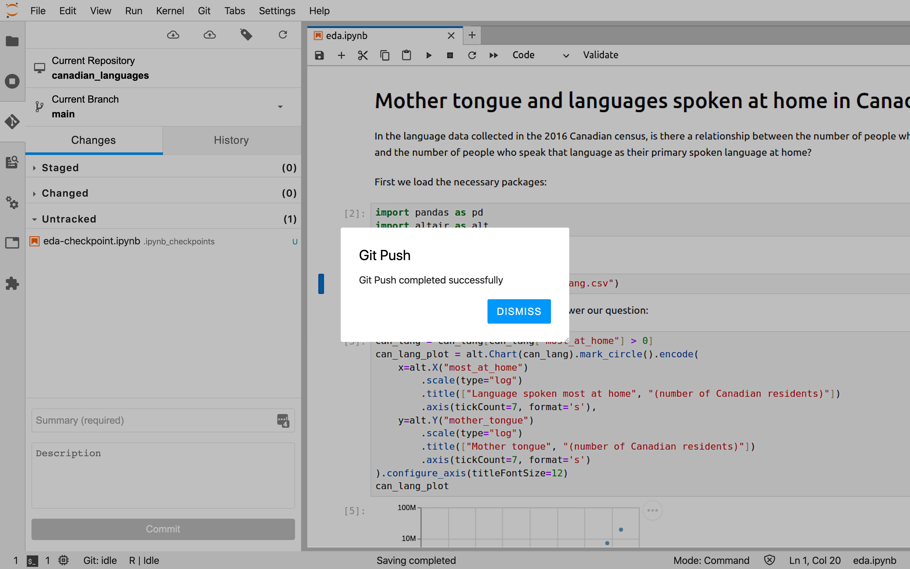
图 12.33 提示推送成功的信息。#
如果你访问 GitHub 上的远程仓库，会看到这些更改现在也出现在那里了（图 12.34）！
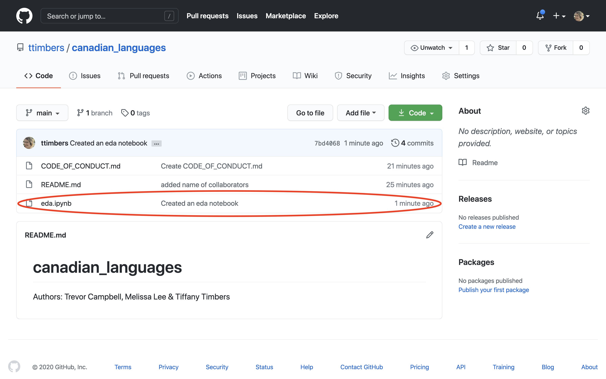
图 12.34 GitHub 网页界面会显示提交信息的预览，以及每个文件最近一次推送的提交时间。#
12.8. 协作#
12.8.1. 为协作者授予项目访问权限#
如前所述，GitHub 让你可以控制谁有权访问你的项目。无论公开项目还是私有项目，默认设置都是：只有创建该 GitHub 仓库的人才有创建、编辑和删除文件的权限，也就是写权限（write access）。要让协作者获得项目的写权限，请进入“设置（Settings）”选项卡（图 12.35）。
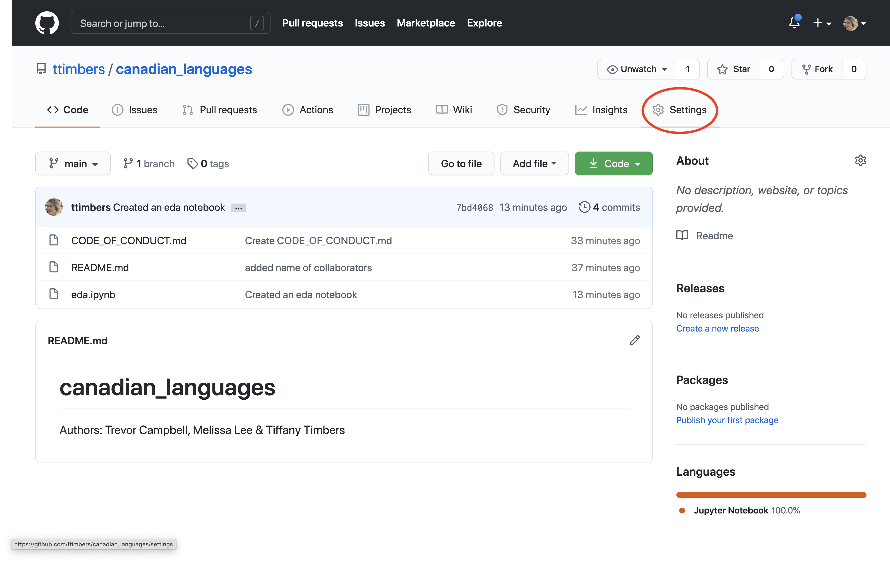
图 12.35 GitHub 网页界面上的“设置”选项卡。#
然后点击“管理访问权限（Manage access）”（图 12.36）。
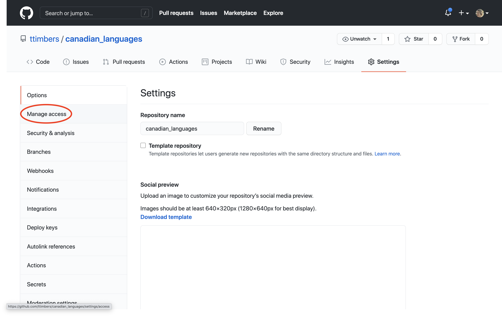
图 12.36 GitHub 网页界面上的“管理访问权限”选项卡。#
然后点击绿色的“邀请协作者（Invite a collaborator）”按钮（图 12.37）。
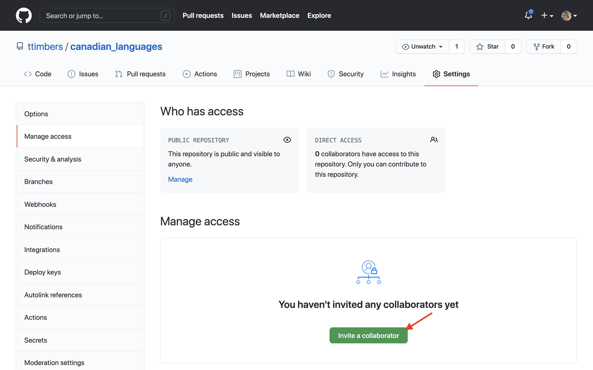
图 12.37 GitHub 网页界面上的“邀请协作者”按钮。#
输入协作者的 GitHub 用户名或邮箱，名字出现时选中它（图 12.38）。
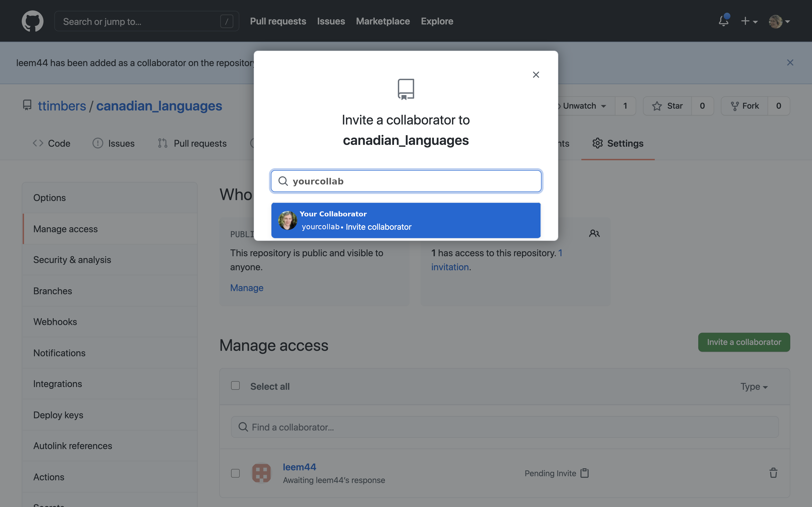
图 12.38 用于输入协作者 GitHub 用户名或邮箱的文本框。#
最后，点击绿色的“添加 <COLLABORATORS_GITHUB_USER_NAME> 到本仓库（Add <COLLABORATORS_GITHUB_USER_NAME> to this repository）”按钮（图 12.39）。
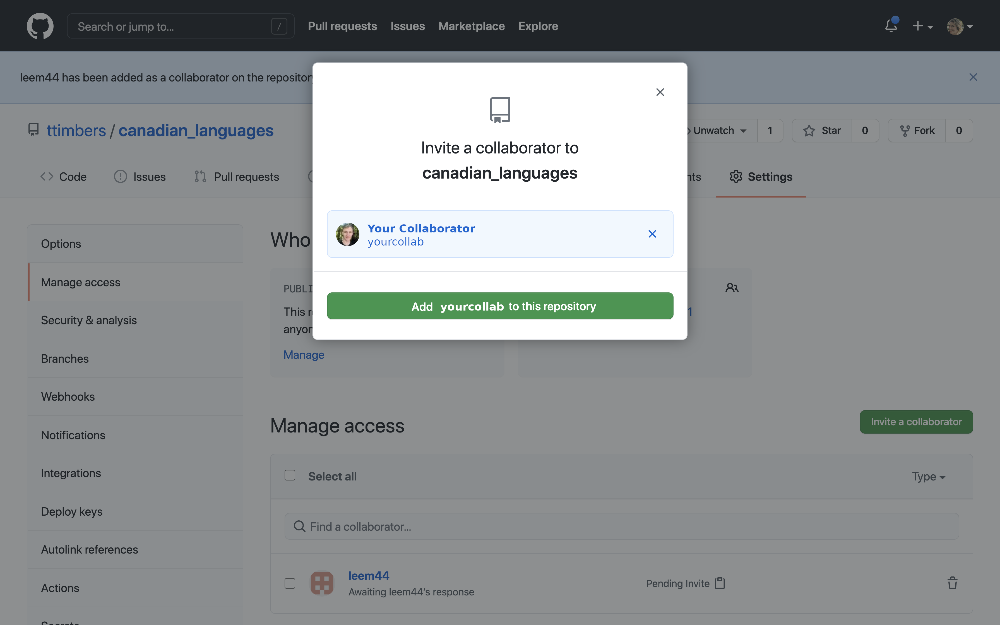
图 12.39 GitHub 网页界面上把协作者添加到仓库的确认按钮。#
完成之后，你应该能在“管理访问权限”选项卡下看到刚添加的协作者。他们应该会收到一封电子邮件邀请，邀请他们作为协作者加入该 GitHub 仓库。他们需要接受邀请，写权限才会生效。
12.8.2. 用 Jupyter 从 GitHub 拉取更改#
下面我们来看看如何用 Jupyter Git 扩展，把协作者对我们的分析文件 eda.ipynb 所做的更改拉取过来（图 12.40）。
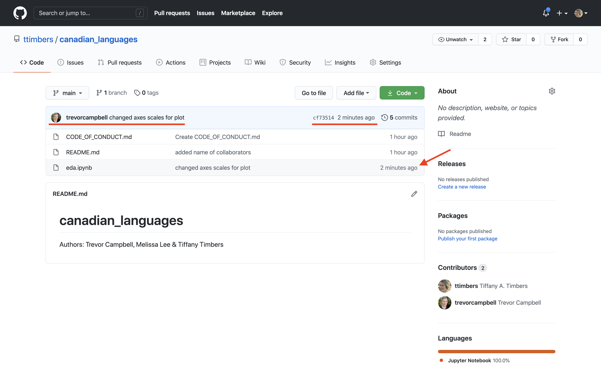
图 12.40 GitHub 界面会显示最后向远程仓库推送提交的人的名字、对应提交信息的预览、唯一的提交标识符，以及该提交是多久以前拍下的快照。#
在 Jupyter 中点击带向下箭头的云朵图标，就能让 Git 执行拉取（图 12.41）。
图 12.41 Jupyter Git 扩展的克隆按钮。#
文件成功地从 GitHub 拉取之后，你需要点击“忽略”才能继续工作（图 12.42）。
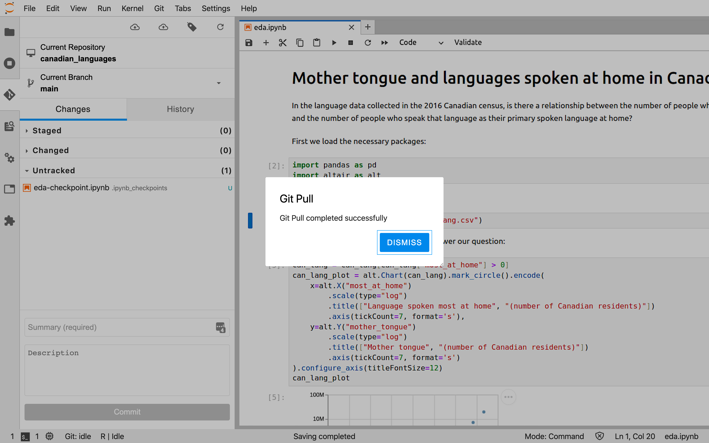
图 12.42 更改成功地从远程仓库拉取后出现的提示。#
之后，打开（或刷新）刚刚拉取了更改的文件，就能看到这些更改（图 12.43）。
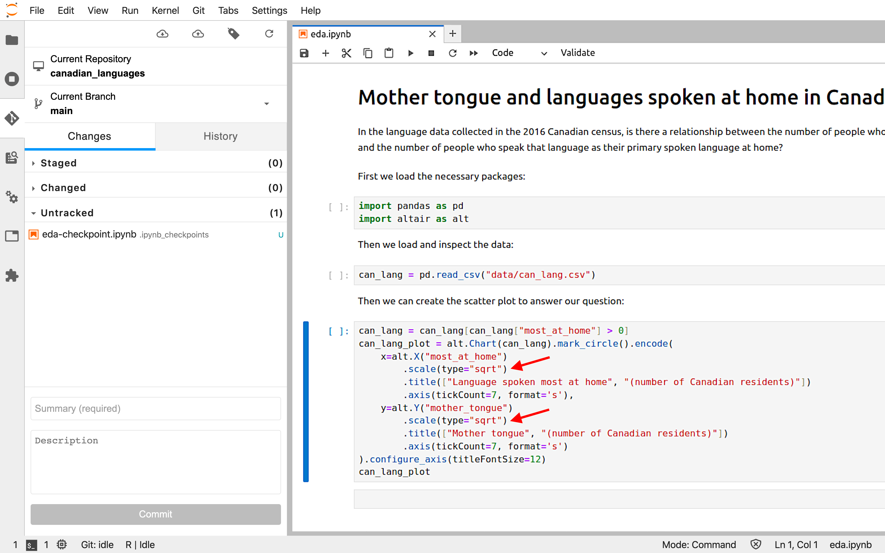
图 12.43 协作者对 eda.ipynb 所做的更改（代码处用红色箭头标出）。#
查看项目更改的历史记录往往很有用。在 Jupyter 里，点击 Git 面板中的“历史（History）”，就能直接查看（图 12.44）。
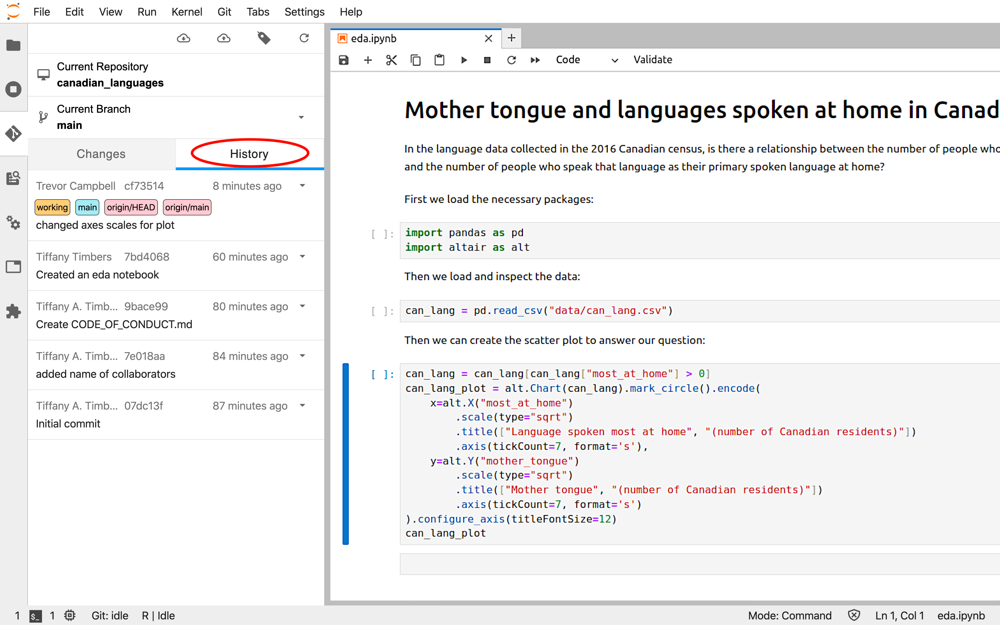
图 12.44 用 Jupyter Git 扩展查看版本控制仓库历史。#
在每次开始工作、动手修改本地副本之前，都先拉取更改，这是良好实践。如果没有这样做，而协作者已经把一些更改推送到 GitHub 上的项目里，那么在你拉取之前，就无法把自己的更改推送到 GitHub。出现这种情况时，可以通过图 12.45 中所示的报错信息来判断。
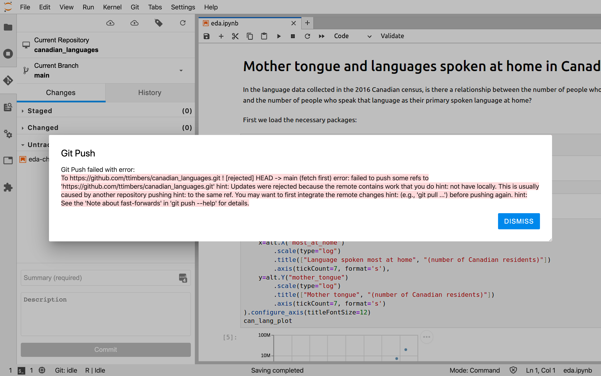
图 12.45 该报错信息表示远程仓库上存在你本地没有的更改。#
一般来说，摆脱这种局面并不太麻烦。首先，你需要拉取 GitHub 上已经存在、而本地仓库中还没有的更改。通常出现这种情况时，Git 能自动帮你合并更改，即使你和协作者改动的是同一个文件的不同位置！
但是，如果你和协作者修改了同一个文件的同一行，Git 就无法自动合并这些更改——它不知道该保留你那一（几）行、协作者那一（几）行，还是两者的某种混合。这时 Git 会提示某些文件存在合并冲突（图 12.46）。
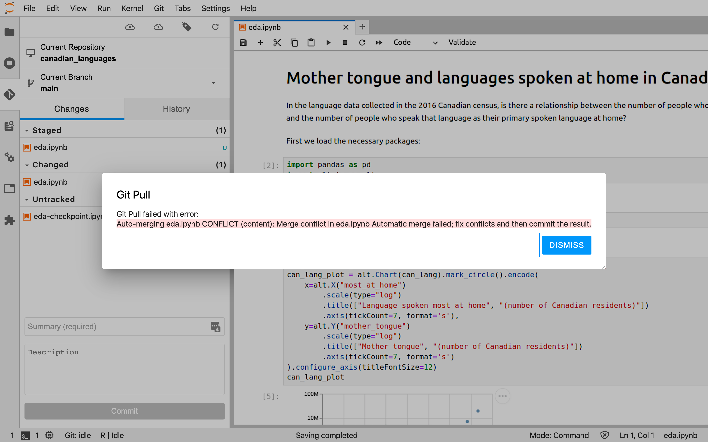
图 12.46 该报错信息表示你和协作者修改了同一个文件的同一行，Git 无法自动合并这些更改。#
12.8.3. 处理合并冲突#
要解决合并冲突，你需要用纯文本编辑器打开出问题的文件，找出 Git 写在文件中的特殊标记，这些标记会告诉你合并冲突发生在哪里（图 12.47）。
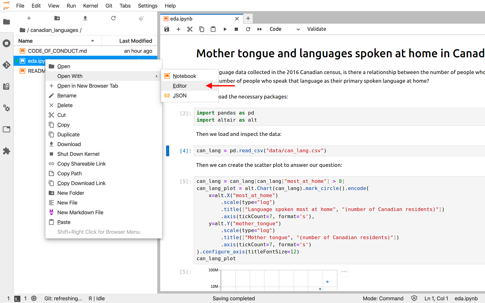
图 12.47 在 Jupyter 中把笔记本以纯文本文件视图打开的方法。#
合并冲突的起始处前面有 <<<<<<< HEAD，结束处则由 >>>>>>> 标出。在这些标记之间，Git 还插入一个分隔符（=======）。分隔符之前的那个版本是你的更改，分隔符之后的版本则是 GitHub 上原有的更改。在图 12.48 中可以看到，你的本地仓库里有一行代码把坐标轴标度设为 "sqrt"。看来协作者也修改了这一行，只不过把坐标轴标度设成了 "log"！
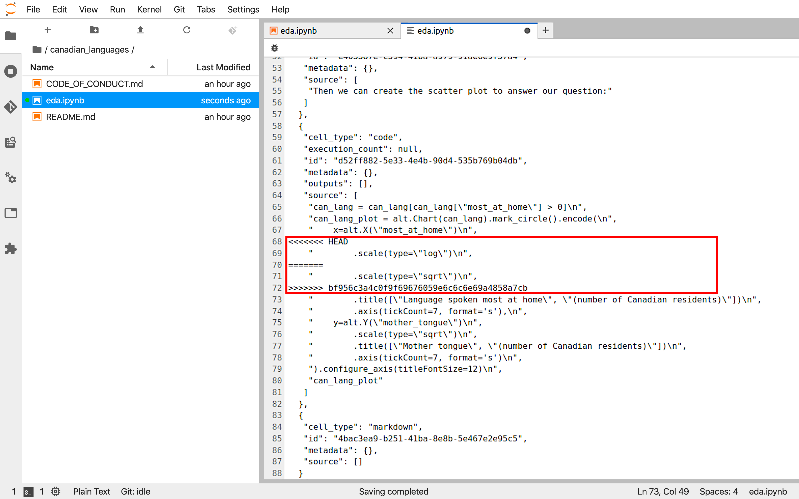
图 12.48 合并冲突标记（用红色标出）。#
决定保留哪个版本的更改（或者怎样的组合！）之后，你需要用纯文本编辑器删掉 Git 添加的特殊标记（图 12.49）。
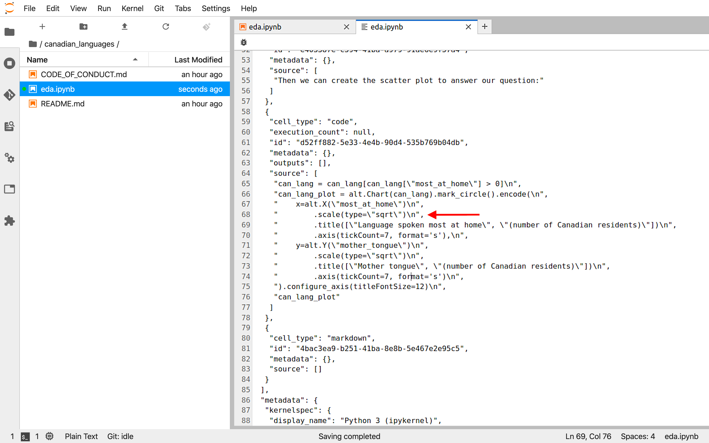
图 12.49 合并冲突已解决的文件。#
必须先保存该文件、把它添加到暂存区并提交，然后才能把更改推送到 GitHub。
12.8.4. 用 GitHub 议题沟通#
在团队中做项目时，你想要的并不只是“谁在什么时候改了项目中的哪个文件”这样的历史记录——你还想要把做过的决定、提出过的想法、发现并解决的问题，以及围绕项目的其他所有沟通都记录下来。电子邮件和即时通讯应用在日常沟通中都很常用，但它们并不是为针对具体项目的沟通而设计的：两者通常都没有按项目子话题组织对话、搜索与某个缺陷或软件版本有关的对话等功能。
GitHub 的议题是电子邮件和即时通讯应用之外的另一种书面沟通媒介，专门为方便项目内的沟通而设计。议题从项目 GitHub 页面上的“议题（Issues）”选项卡发起，即使对话结束、议题被关闭，它们也会留在那里（与电子邮件不同，议题通常不会被删除）。通常每个话题建一个议题讨论串，用 GitHub 的搜索工具很容易找到它们。所有议题对所有协作者都可见，因此没有人会被排除在对话之外。最后，议题还可以设置成让团队成员在有人创建新议题或在议题讨论串中发帖时收到电子邮件通知。也可以直接从电子邮件回复议题。既然有这么多好处，我们强烈建议在项目沟通中使用议题。
要发起 GitHub 议题，先点击“议题”选项卡（图 12.50）。
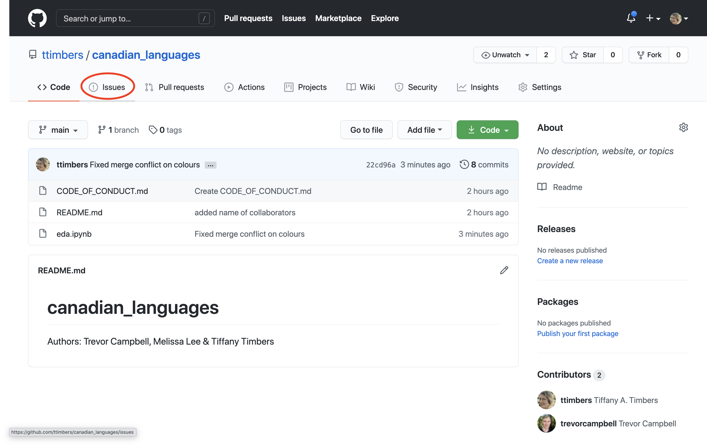
图 12.50 GitHub 网页界面上的“议题”选项卡。#
接着点击“新建议题（New issue）”按钮（图 12.51）。
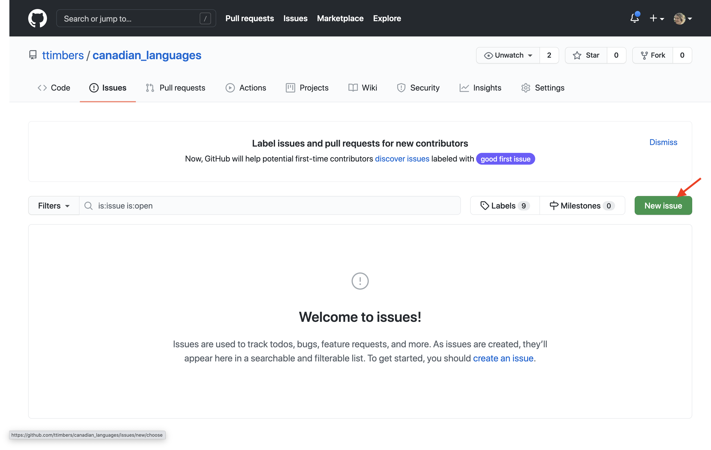
图 12.51 GitHub 网页界面上的“新建议题”按钮。#
填写议题标题（作用类似电子邮件的主题行），然后在较大的文本框中填写正文。最后点击“提交新议题（Submit new issue）”发布议题，与其他人分享（图 12.52）。
图 12.52 创建 GitHub 议题的对话框与提交按钮。#
要回复别人发起的议题，可以在大文本框中写下你的回应，然后点击“评论（Comment）”（图 12.53）。
图 12.53 回复 GitHub 议题的对话框。#
对话结束后，可以点击“关闭议题（Close issue）”。已关闭的议题以后可以通过“议题”选项卡中的“已关闭（Closed）”标题链接查看（图 12.54）。
图 12.54 GitHub 网页界面上的“已关闭”议题选项卡。#
12.9. 习题#
本章所讲内容的练习题，可以在配套的练习册仓库中“借助版本控制协作（Collaboration with version control）”一行找到。点击“查看练习册（view worksheet）”，可以预览本章练习册的非交互版本。要交互式地完成这些习题，请按照练习册仓库中的说明下载全部练习册，并按照第 13 章中给出的计算机配置说明操作。这样才能确保练习册提供的自动反馈和指导按预期工作。
12.10. 拓展资源#
现在你已经掌握了 Git 和 GitHub 版本控制的基础知识，可以借助下面列出的资源进一步拓展：
GitHub 的指南网站是深入学习 Git 和 GitHub 的绝佳资源。
《Good enough practices in scientific computing》 [Wilson et al., 2017] 就数据分析项目中有用的工作流和“够用就好”的实践给出了更多建议。
除了 GitHub，还有 GitLab 和 BitBucket 等其他流行的 Git 仓库托管平台。比较这些选项超出了本书的范围；在你成为更进阶的用户之前，一直用 GitHub 就完全没问题。只要知道你有别的选择就好！
GitHub 关于创建个人访问令牌的文档是很好的补充资源，如果你在生成和使用个人访问令牌时需要帮助，可以查阅它。
12.11. 参考文献#
- WBC+17
Greg Wilson, Jennifer Bryan, Karen Cranston, Justin Kitzes, Lex Nederbragt, and Tracy Teal. Good enough practices in scientific computing. PLoS Computational Biology, 2017.